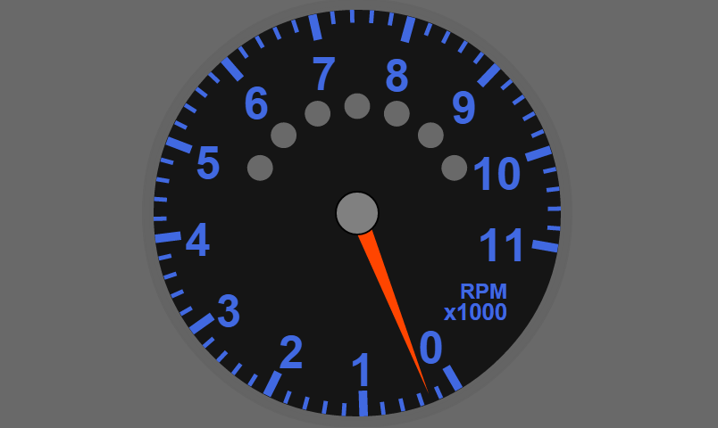

This widget is a generic implementation of an Analog Gauge. All of the Spek Gauges simply use this widget by passing in the different parameters. It is configured using the avaiLabel arguments. All arguments that take degrees, considers zero degrees at 3 o'clock. All sizes are in pixels relative to 480x480. If a gauge is resized, it will automatically adjust these values.
Other values, the gauge needs, are sent by the SIM to control, minimum, maximum, states, and intervals for the major,minor.
Example of how the Tachometer uses this:
<sra-analog-gauge
class = "SIMRacingApps-Widget-AnalogGauge-Spek-Tachometer"
data-sra-args-analog-gauge = "Tachometer"
data-sra-args-start-angle = "60"
data-sra-args-end-angle = "10"
data-sra-args-x-label1 = "400"
data-sra-args-y-label1 = "325"
data-sra-args-font-size-label1 = "25"
data-sra-args-anchor-label1 = "end"
data-sra-args-x-label2 = "400"
data-sra-args-y-label2 = "350"
data-sra-args-font-size-label2 = "20"
data-sra-args-anchor-label2 = "end"
data-sra-args-round-to = "{{sraRoundTo}}"
data-sra-args-show-value = "{{sraShowValue}}"
data-sra-args-interval = "{{sraArgsInterval||sraInterval}}"
></sra-analog-gauge>

Attributes:
| Name | Type | Description |
|---|---|---|
data-sra-args-analog-gauge |
string | The name of the gauge that the SIM will use to send the values from. See, Gauges, for avaiLabel values. Defaults to "Generic". |
data-sra-args-interval |
milliseconds | The interval that this widget will update from the server. Default is 300. |
data-sra-args-start-angle |
degrees | The starting angle where the first major tick mark is displayed. Defaults to 120. |
data-sra-args-end-angle |
degrees | The ending angle where the last major tick mark is displayed. Defaults to 420. |
data-sra-args-ring-size |
pixels | The width of the outer ring. Defaults to 20. |
data-sra-args-button-size |
pixels | The width of the middle button. Defaults to 50. |
data-sra-args-major-size |
pixels | The length of the major tick mark. Defaults to 30. |
data-sra-args-major-buffer |
pixels | This distance from the outer ring where the major tick mark starts. Defaults to 3. |
data-sra-args-text-buffer |
pixels | The distance from the outer ring where the major text starts. Defaults to 30. |
data-sra-args-major-font-size |
pixels | The size of the major text's font. Defaults to 30. |
data-sra-args-minor-size |
pixels | The length of the minor tick mark. Defaults to 15. |
data-sra-args-minor-buffer |
pixels | The distance from the outer rung where the minor tick mark starts. Defaults to 7. |
data-sra-args-needle-buffer |
pixels | The distance where the end of the needle is from the outer ring. Defaults to 25. |
data-sra-args-round-to |
double | The value to round the digital display to before displaying it. Defaults to 1. For example: 100 rounds the value 1234 to 1200, .01 rounds the value 1234.5678 to 1234.57. |
data-sra-args-decimals |
integer | The number of decimal places to show after the decimal point regardless of rounding. Defaults to 0. |
data-sra-args-label1 |
string | The text for the main label. Defaults to blank. |
data-sra-args-x-label1 |
pixels | The X coordinate of where to put the main label. Defaults to 240. |
data-sra-args-y-label1 |
pixels | The Y coordinate of where to put the main label. Defaults to 150. |
data-sra-args-font-size-label1 |
pixels | The font size of the main label. Defaults to 40. |
data-sra-args-anchor-label1 |
string | The anchor defines where the X/Y coordinates are in relation to the entire text. Values are "middle", "left", "right". Defaults to "middle". |
data-sra-args-label2 |
string | The text for the second label. Defaults to blank. |
data-sra-args-x-label2 |
pixels | The X coordinate of where to put the second label. Defaults to 240. |
data-sra-args-y-label2 |
pixels | The Y coordinate of where to put the second label. Defaults to 185. |
data-sra-args-font-size-label2 |
pixels | The font size of the second label. Defaults to 30. |
data-sra-args-anchor-label2 |
string | The anchor defines where the X/Y coordinates are in relation to the entire text. Values are "middle", "left", "right". Defaults to "middle". |
data-sra-args-x-value |
pixels | The X coordinate of where to put the digital value. Defaults to 240. |
data-sra-args-y-value |
pixels | The Y coordinate of where to put the digital value. Defaults to 330. |
data-sra-args-font-size-value |
pixels | The font size of the second label. Defaults to 50. |
data-sra-args-anchor-value |
pixels | The anchor defines where the X/Y coordinates are in relation to the entire text. Values are "middle", "left", "right". Defaults to "middle". |
data-sra-args-uom |
string | The unit of measure to display. Overrides what comes from the SIM. Defaults to blank, let the SIM decide. |
data-sra-args-x-uom |
pixels | The X coordinate of where to put the UOM. Defaults to 240. |
data-sra-args-y-uom |
pixels | The Y coordinate of where to put the UOM. Defaults to 370. |
data-sra-args-font-size-uom |
pixels | The font size of the UOM. Defaults to 30. |
data-sra-args-anchor-uom |
string | The anchor defines where the X/Y coordinates are in relation to the entire text. Values are "middle", "left", "right". Defaults to "middle". |
data-sra-args-flash-rate |
milliseconds | The rate that the gauge will flash when it reaches the CRITICAL State. Defaults to 300. |
data-sra-args-flash-on-critical |
boolean | The condition, true or false, to determine if the gauge should flash. Defaults to true. This value can be overridden for all gauges in the URL using "FLASHONCRITICAL=false". |
data-sra-args-show-digital-value |
boolean | The condition, true or false, to turn the digital value on and off. The default is true. This value can be override for all gauge in the URL using "SHOWDIGITALVALUE=false". |
data-sra-args-use-speedometer |
boolean | The condition, true or false, to get the Tachometer to use the speed to determine the states relating to pit road speed. Defaults to true. If set to false, it uses the RPMs while in 2nd Gear that the SIM returns. if your app or widget implements a way for the user to set it (like in the real stock cars), then calling "/SIMRacingApps/Data/Car/REFERENCE/setRPMPitRoadSpeed/{RPM}" will set it for that session. Otherwise, it will use the default from Car.json or the car specific json files for each SIM where it can be defined by track. (NOTE: As of version 1.0, the json files have not been updated and the default is 3950.) |
- Since:
- 1.0
- Copyright:
- Copyright (C) 2015 - 2016 Jeffrey Gilliam
- License:
- Apache License 2.0